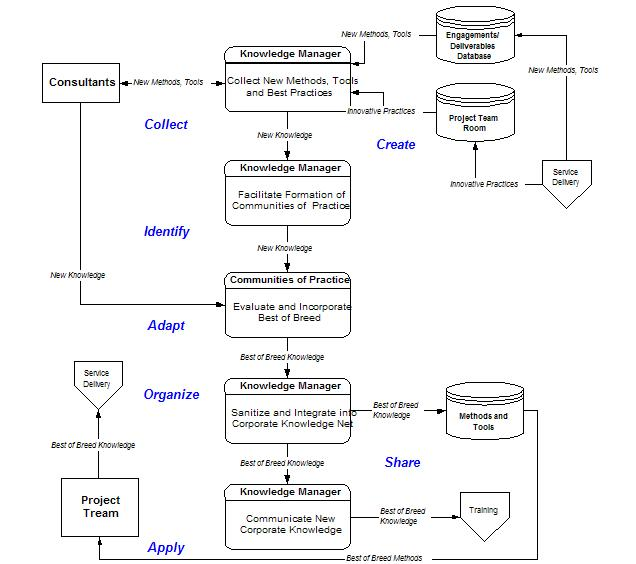
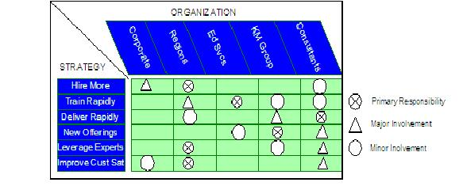
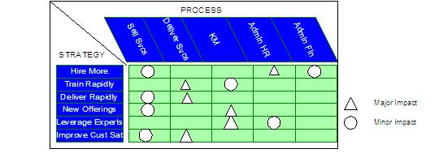
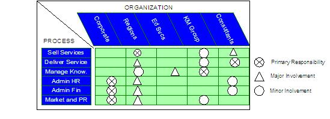

| Example: Knowledge Model for IT Consulting Services Firm |
 |
|
Relationships
| Related Elements |
|---|
Main Description
High-level Knowledge Process Flow
SAMPLE KNOWLEDGE PROCESS FLOW:

SAMPLE PROCESS KNOWLEDGE MAP: (for selected service delivery processes)
Strategy / Organization / Process Matrices SAMPLE STRATEGY / ORGANIZATION MATRIX:  SAMPLE STRATEGY / PROCESS MATRIX:  SAMPLE PROCESS / ORGANIZATION MATRIX:  Summary Knowledge Management Enablers SAMPLE SUMMARY ASSESSMENT OF KM ENABLERS:
|
| © Copyright IBM Corp. 1987, 2012 All Rights Reserved Property of IBM These materials are intended only for use as part of an IBM engagement |